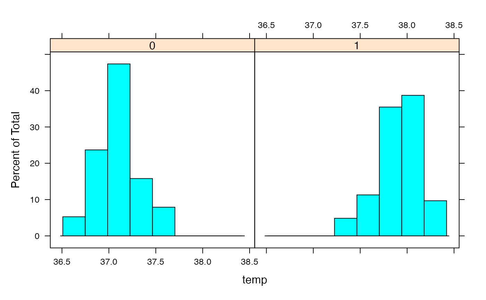
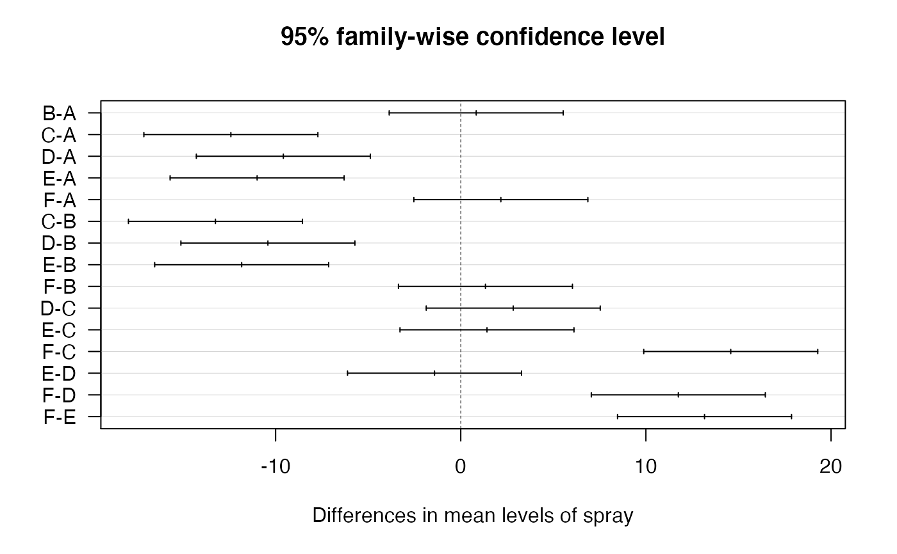

To print a listing of all examples of a chapter, use ch15().
To run all the examples of ch15(), use example(ch15).
Examples
# Chapter 15
# Testing Differences and Relations
# Taking a Closer Look at Distributions
## Observing beavers
str(beaver2)
#> 'data.frame': 100 obs. of 4 variables:
#> $ day : num 307 307 307 307 307 307 307 307 307 307 ...
#> $ time : num 930 940 950 1000 1010 1020 1030 1040 1050 1100 ...
#> $ temp : num 36.6 36.7 36.9 37.1 37.2 ...
#> $ activ: num 0 0 0 0 0 0 0 0 0 0 ...
## Testing normality graphically
library(lattice)
histogram(~temp | factor(activ), data=beaver2)

## Using quantile plots
### Comparing two samples
qqplot(beaver2$temp[beaver2$activ==1],
beaver2$temp[beaver2$activ==0])
### Using a QQ plot to check for normality
qqnorm( beaver2$temp[beaver2$activ==0], main='Inactive')
qqline( beaver2$temp[beaver2$activ==0] )
## Testing normality in a formal way
shapiro.test(beaver2$temp)
#>
#> Shapiro-Wilk normality test
#>
#> data: beaver2$temp
#> W = 0.93336, p-value = 7.764e-05
#>
result <- shapiro.test(beaver2$temp)
result$p.value
#> [1] 7.763623e-05
with(beaver2, tapply(temp, activ, shapiro.test))
#> $`0`
#>
#> Shapiro-Wilk normality test
#>
#> data: X[[i]]
#> W = 0.95427, p-value = 0.1231
#>
#>
#> $`1`
#>
#> Shapiro-Wilk normality test
#>
#> data: X[[i]]
#> W = 0.98326, p-value = 0.5583
#>
#>
# Comparing Two Samples
## Testing differences
### Carrying out a t-test
t.test(temp ~ activ, data=beaver2)
#>
#> Welch Two Sample t-test
#>
#> data: temp by activ
#> t = -18.548, df = 80.852, p-value < 2.2e-16
#> alternative hypothesis: true difference in means between group 0 and group 1 is not equal to 0
#> 95 percent confidence interval:
#> -0.8927106 -0.7197342
#> sample estimates:
#> mean in group 0 mean in group 1
#> 37.09684 37.90306
#>
activetemp <- beaver2$temp[beaver2$activ==1]
inactivetemp <- beaver2$temp[beaver2$activ==0]
t.test(activetemp, inactivetemp)
#>
#> Welch Two Sample t-test
#>
#> data: activetemp and inactivetemp
#> t = 18.548, df = 80.852, p-value < 2.2e-16
#> alternative hypothesis: true difference in means is not equal to 0
#> 95 percent confidence interval:
#> 0.7197342 0.8927106
#> sample estimates:
#> mean of x mean of y
#> 37.90306 37.09684
#>
### Dropping assumptions
wilcox.test(temp ~ activ, data=beaver2)
#>
#> Wilcoxon rank sum test with continuity correction
#>
#> data: temp by activ
#> W = 15, p-value < 2.2e-16
#> alternative hypothesis: true location shift is not equal to 0
#>
### Testing direction
## Comparing paired data
t.test(extra ~ group, data=sleep, paired=TRUE)
#>
#> Paired t-test
#>
#> data: extra by group
#> t = -4.0621, df = 9, p-value = 0.002833
#> alternative hypothesis: true difference in means is not equal to 0
#> 95 percent confidence interval:
#> -2.4598858 -0.7001142
#> sample estimates:
#> mean of the differences
#> -1.58
#>
# Testing Counts and Proportions
## Checking out proportions
survivors <- matrix(c(1781,1443,135,47), ncol=2)
colnames(survivors) <- c('survived','died')
rownames(survivors) <- c('no seat belt','seat belt')
survivors
#> survived died
#> no seat belt 1781 135
#> seat belt 1443 47
result.prop <- prop.test(survivors)
result.prop
#>
#> 2-sample test for equality of proportions with continuity correction
#>
#> data: survivors
#> X-squared = 24.333, df = 1, p-value = 8.105e-07
#> alternative hypothesis: two.sided
#> 95 percent confidence interval:
#> -0.05400606 -0.02382527
#> sample estimates:
#> prop 1 prop 2
#> 0.9295407 0.9684564
#>
## Analyzing tables
### Testing contingency of tables
chisq.test(survivors)
#>
#> Pearson's Chi-squared test with Yates' continuity correction
#>
#> data: survivors
#> X-squared = 24.333, df = 1, p-value = 8.105e-07
#>
### Testing tables with more than two columns
str(HairEyeColor)
#> 'table' num [1:4, 1:4, 1:2] 32 53 10 3 11 50 10 30 10 25 ...
#> - attr(*, "dimnames")=List of 3
#> ..$ Hair: chr [1:4] "Black" "Brown" "Red" "Blond"
#> ..$ Eye : chr [1:4] "Brown" "Blue" "Hazel" "Green"
#> ..$ Sex : chr [1:2] "Male" "Female"
HairEyeMargin <- margin.table(HairEyeColor, margin=c(1,2))
HairEyeMargin
#> Eye
#> Hair Brown Blue Hazel Green
#> Black 68 20 15 5
#> Brown 119 84 54 29
#> Red 26 17 14 14
#> Blond 7 94 10 16
chisq.test(HairEyeMargin)
#>
#> Pearson's Chi-squared test
#>
#> data: HairEyeMargin
#> X-squared = 138.29, df = 9, p-value < 2.2e-16
#>
## Extracting test results
str(result)
#> List of 4
#> $ statistic: Named num 0.933
#> ..- attr(*, "names")= chr "W"
#> $ p.value : num 7.76e-05
#> $ method : chr "Shapiro-Wilk normality test"
#> $ data.name: chr "beaver2$temp"
#> - attr(*, "class")= chr "htest"
t.test(temp ~ activ, data=beaver2)$p.value
#> [1] 7.269112e-31
# Working with Models
## Analyzing variances
str(InsectSprays)
#> 'data.frame': 72 obs. of 2 variables:
#> $ count: num 10 7 20 14 14 12 10 23 17 20 ...
#> $ spray: Factor w/ 6 levels "A","B","C","D",..: 1 1 1 1 1 1 1 1 1 1 ...
### Building the model
AOVModel <- aov(count ~ spray, data=InsectSprays)
### Looking at the object
AOVModel
#> Call:
#> aov(formula = count ~ spray, data = InsectSprays)
#>
#> Terms:
#> spray Residuals
#> Sum of Squares 2668.833 1015.167
#> Deg. of Freedom 5 66
#>
#> Residual standard error: 3.921902
#> Estimated effects may be unbalanced
## Evaluating the differences
summary(AOVModel)
#> Df Sum Sq Mean Sq F value Pr(>F)
#> spray 5 2669 533.8 34.7 <2e-16 ***
#> Residuals 66 1015 15.4
#> ---
#> Signif. codes: 0 ‘***’ 0.001 ‘**’ 0.01 ‘*’ 0.05 ‘.’ 0.1 ‘ ’ 1
### Checking the model tables
model.tables(AOVModel, type='effects')
#> Tables of effects
#>
#> spray
#> spray
#> A B C D E F
#> 5.000 5.833 -7.417 -4.583 -6.000 7.167
### Looking at the individual differences
Comparisons <- TukeyHSD(AOVModel)
Comparisons$spray['D-C',]
#> diff lwr upr p adj
#> 2.8333333 -1.8660752 7.5327418 0.4920707
### Plotting the differences
plot(Comparisons, las=1)

## Modeling linear relations
### Building a linear model
Model <- lm(mpg ~ wt, data=mtcars)
### Extracting information from the model
coef.Model <- coef(Model)
coef.Model
#> (Intercept) wt
#> 37.285126 -5.344472
plot(mpg ~ wt, data = mtcars)
abline(a=coef.Model[1], b=coef.Model[2])
## Evaluating linear models
### Summarizing the model
Model.summary <- summary(Model)
Model.summary
#>
#> Call:
#> lm(formula = mpg ~ wt, data = mtcars)
#>
#> Residuals:
#> Min 1Q Median 3Q Max
#> -4.5432 -2.3647 -0.1252 1.4096 6.8727
#>
#> Coefficients:
#> Estimate Std. Error t value Pr(>|t|)
#> (Intercept) 37.2851 1.8776 19.858 < 2e-16 ***
#> wt -5.3445 0.5591 -9.559 1.29e-10 ***
#> ---
#> Signif. codes: 0 ‘***’ 0.001 ‘**’ 0.01 ‘*’ 0.05 ‘.’ 0.1 ‘ ’ 1
#>
#> Residual standard error: 3.046 on 30 degrees of freedom
#> Multiple R-squared: 0.7528, Adjusted R-squared: 0.7446
#> F-statistic: 91.38 on 1 and 30 DF, p-value: 1.294e-10
#>
coef(Model.summary)
#> Estimate Std. Error t value Pr(>|t|)
#> (Intercept) 37.285126 1.877627 19.857575 8.241799e-19
#> wt -5.344472 0.559101 -9.559044 1.293959e-10
### Testing the impact of model terms
Model.anova <- anova(Model)
Model.anova
#> Analysis of Variance Table
#>
#> Response: mpg
#> Df Sum Sq Mean Sq F value Pr(>F)
#> wt 1 847.73 847.73 91.375 1.294e-10 ***
#> Residuals 30 278.32 9.28
#> ---
#> Signif. codes: 0 ‘***’ 0.001 ‘**’ 0.01 ‘*’ 0.05 ‘.’ 0.1 ‘ ’ 1
Model.anova['wt','Pr(>F)']
#> [1] 1.293959e-10
## Predicting new values
### Getting the values
new.cars <- data.frame(wt=c(1.7, 2.4, 3.6))
predict(Model, newdata=new.cars)
#> 1 2 3
#> 28.19952 24.45839 18.04503
### Having confidence in your predictions
predict(Model, newdata=new.cars, interval='confidence')
#> fit lwr upr
#> 1 28.19952 26.14755 30.25150
#> 2 24.45839 23.01617 25.90062
#> 3 18.04503 16.86172 19.22834
predict(Model,newdata=new.cars, interval='prediction')
#> fit lwr upr
#> 1 28.19952 21.64930 34.74975
#> 2 24.45839 18.07287 30.84392
#> 3 18.04503 11.71296 24.37710